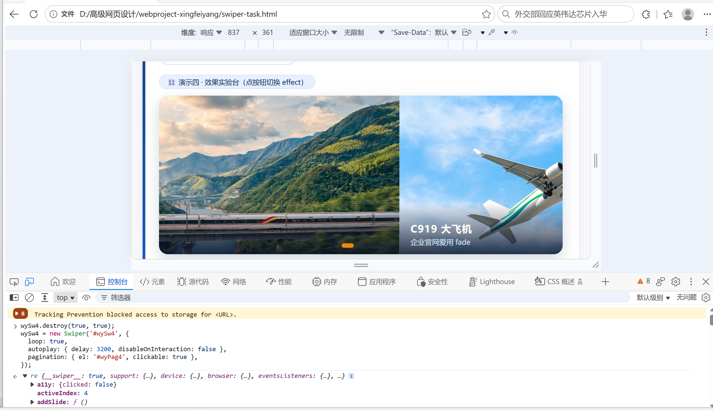
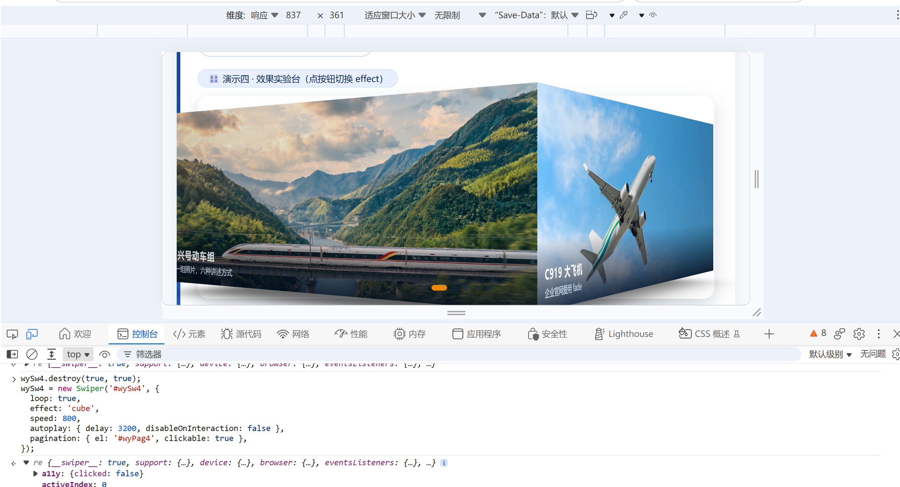
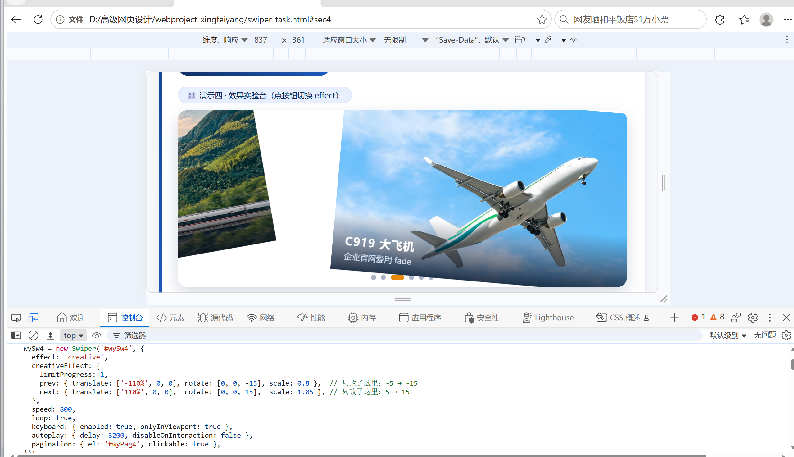

作者：邢菲洋 · 24002120117 · 使用模型 GLM-5.3-Flash · 提交日期 2026-11-10（截止 11.11 前）
第 1 轮结论：循环、3.2 秒自动翻页不停止、圆点可点三项均正常，但轮播始终是平推——代码里没有 effect: 'cube'，需求④不达标。
第 2 轮结论：逐条补全提示词后，轮播立即呈现 3D 立方体旋转，且自动翻页与圆点跳转保持正常，四条需求全部达标。


5° 正式版：点「creative 电影片」后，上一张缩小左移斜靠、下一张带角度放大进场，自动翻页正常——电影选片墙成型。
15° 实验：控制台只改 rotate 第 3 个值（5 → 15），歪斜立刻明显加大——印证「rotate 第三项 = 绕屏幕平面的旋转角」。

结论：双击图片放大到 3 倍，视野可拖动平移看清船体细节，说明条保持原位不变形——证明缩放只作用于 swiper-zoom-container 内的图片；再双击还原，切效果按钮后缩放依然生效。